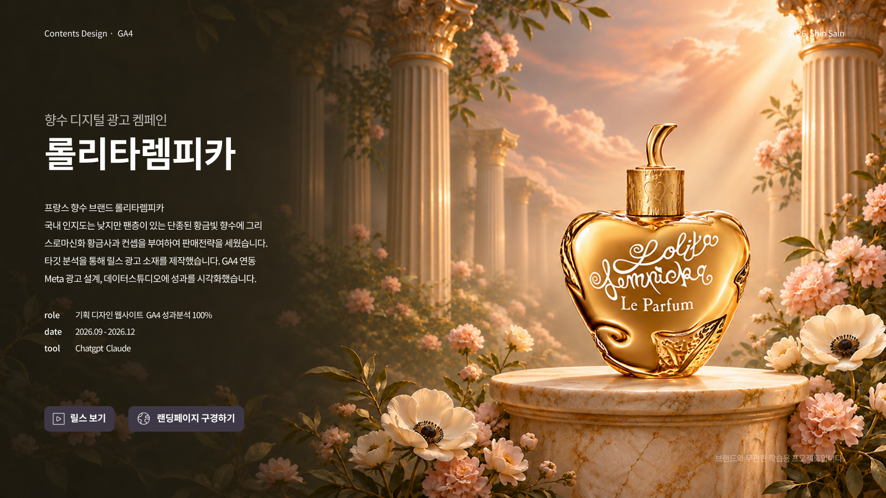
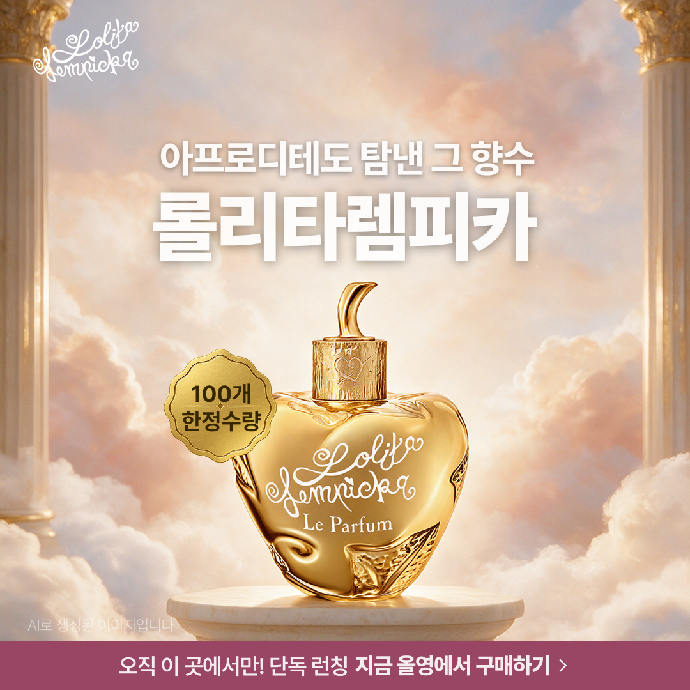

공통 — 브랜드와 전체 목표

- 이름
- 신사인
- 브랜드명
- 롤리타렘피카 (골든 애플 캠페인)
- 기간
- 2026.09 ~ 2026.12
- 브랜드 (무엇을, 누구에게, 실사업/가상)
- 골든 애플 여성향수 100ml (예정가 208,000원)을 국내 20~30대 여성에게 소개. 단종된 제품에 그리스로마신화 황금사과 스토리텔링을 입힌 가상 프로젝트 (실제 판매·결제 없음, 신화 연결은 창작 콘셉트)
- 상황 분석 (시작할 때 상태)
- 단종 제품이라 실구매 경로가 없고, 브랜드 인지도·사이트 방문 데이터가 없는 상태에서 시작. 고려 단계(시향 전 망설임, 감정 곡선 -2)가 승부 지점. 사이트는 2026.10.29부터 GA4 측정 시작.
- 북극성 지표 / 시작 / 목표 / 결과 / 출처
- 북극성
- 출시 알림 버튼 클릭 수
- 시작
- 출시 알림 버튼 클릭 수 [ ] (광고 전, 버튼 단위 클릭 수는 GA4에서 아직 분리 확인 못 함) / 방문자 76명 (실측) / 평균 참여 시간 54초 (실측)
- 목표 (가안, 가정)
- 광고 1주·5만 원 시뮬레이션 기준 출시 알림 버튼 클릭 약 4건 (CTR 2%, 클릭 후 버튼 클릭률 4%, CPM 10,000원 가정) / 방문자 [ ] / 평균 참여 시간 [ ]
- 결과
- [ ] (광고 집행 전)
- 출처
- GA4 속성 lolitalempika, 지난 28일(2026.10.15~11.11), 2026.11.12 조회. 가안 목표는 DAY37 예산분배 시트 가정값 기준
| 축 | 목표 / 핵심 지표 | 장표 |
|---|---|---|
| 콘텐츠 | 목표 [ ] / 핵심 지표 최대 조회수·좋아요·댓글·공유 (릴스 8초·15초) | 02~05 (기획은 01) |
| 퍼포먼스 | 목표 릴스 2개 Meta 광고, 예산 5만 원 이내, 1주 측정 (가정) / 핵심 지표 CTR·CPC·출시 알림 버튼 클릭 수·CPA (ROAS 미사용) | 06~07 (06 측정 구조·지표 설계 + Meta 광고 집행, 07 소재 비교) / 결과 [ ] (미집행) |
| 그로스 | 목표 [ ] / 출시 알림 버튼 클릭 = 구매 전환으로 가정 (가정) / 핵심 지표 퍼널 전환율·세션·참여율 (세션 114, 참여율 32.46% 실측) | 08~09 |
- 내 사이트 주소 / 만든 방법 / 측정 연결 / 테스트한 것
- https://sainshin.github.io/lolitalempika/ / GitHub Pages (sainshin/lolitalempika) / GA4 data-ga 속성 + Looker Studio 보고서 "롤리타렘피카_261106_신사인" / 2026.10.29 ?ga_debug=1 테스트 (실측, 사이트 패널 기준), DebugView [ ], 광고 집행·A/B 하지 않음
기획 — 브랜드 기획·카피
- 프로젝트명
- 그리스로마신화 황금사과 스토리로 향수 컨셉을 재해석한 브랜드 기획
- 한 줄 맥락
- 롤리타렘피카 향수를 구매하고 싶어하는 가상의 페르소나 서하윤에게 '소장하고 싶은 황금사과'로 소개하는 가상 프로젝트
- 기간
- [ ]
- 도구 배지
- Notion 카피 머신 사이트(https://lolita-lempicka-copy-machine.diaroad7.chatgpt.site/) 사용한 AI 도구명 ChatGPT
- 역량 배지
- 브랜드 전략 페르소나·고객 여정 설계 포지셔닝·USP 카피라이팅
- 핵심 지표 1 / 시작 / 목표 / 결과 / 출처
- 고려 단계 감정 점수 / 시작 -2 (고객 여정 5단계 중 최저, 가정: 자체 설정 점수) / 목표 [ ] / 결과 [ ] (미측정) / 출처 노션 DAY8 고객 여정 (https://app.notion.com/p/3e407e401b6383ffac5881393dcb8f51)
- 핵심 지표 2 / 시작 / 목표 / 결과 / 출처
- 카피 5문 점검 / 시작 태그라인 N 판정 / 목표 점검 통과 / 결과 [ ] / 출처 노션 DAY11 브랜드 가이드라인 (https://app.notion.com/p/67b07e401b63838380ce81e9fb738b6f)
- 상황 분석
- 단종 제품이라 실구매 경로가 없고 가상 스토리텔링으로만 소개 가능. 향 선택은 시향 없이 망설이는 고려 단계에서 막힘(감정 -2).
- 브랜드·제품
- 롤리타렘피카 골든 애플 100ml, 예정가 208,000원
- 타깃·페르소나
- 서하윤, 33세, 패션 플랫폼 브랜드 디자이너 8년 차, 성수동 (노션 DAY7: https://app.notion.com/p/11807e401b6382e5825e01c00e240f0a)
- 고객 여정(5단계 감정)
- 인지 호기심 +2 / 고려 불안 -2 / 구매 안도 +1 / 사용 만족 +3 / 충성 애착 +2 (노션 DAY8, 승부 지점 = 고려 단계)
- 개선 목표
- 고려 단계의 불안(-2)을 줄이고, 단종 향수를 '소장하고 싶은 오브제'로 보이게 하는 메시지 정립
- 가설
- 시향 전 망설임은 향 설명보다 '소장 가치를 설명하는 스토리'로 줄일 수 있다. 희소성을 단정하지 않고 신화 콘셉트로 차별화한다.
- 실행
- 4개 모듈로 압축
- ① Who
- 서하윤 페르소나
- ② Stuck
- 고객 여정 감정 곡선, 고려 단계 -2
- ③ Win
- 포지셔닝 빈자리(X축 희소성·소장 오브제 / Y축 향 지속성, 경쟁 브랜드: 본투스탠드아웃·논픽션·페사드·탬버린즈·SW19) + USP (노션 DAY9: https://app.notion.com/p/42007e401b63834295f28149775f9fc0)
- ④ Say
- 카피 개선(의도 → 초안 → 고친 이유 → 완성)
- 의도
- 단종 제품을 소장하고 싶은 황금사과로 소개
- 초안
- 100개 한정수량, 그리스로마신화 여신도 탐낸 향수
- 고친 이유
- 5문 점검 결과 태그라인 N 판정 / 금지 표현('여신') 제외 / 희소성·지속 시간 단정 금지
- 완성
- "아프로디테도 탐낸 그 향수", "그리스로마신화 황금사과를 향수로 담다"
- 카피 원칙
- 신화는 창작 콘셉트로 표기, 희소성(재고·한정) 단정 금지, 지속 시간 보장 금지
- 증거 캡처 파일 이름
- 결과
- 기획 4개 모듈 정리 완료. 성과 수치는 광고·사이트 데이터가 쌓인 뒤 08~09장에서 확인 (현재 [ ], 미측정).
- 재분석
- [ ]
- 다음 목표 예상
- 02~05 콘텐츠 장으로 연결: 서하윤 고려 단계 불안을 릴스·상세페이지에서 해소
- 노션 출처
- DAY7 페르소나(https://app.notion.com/p/11807e401b6382e5825e01c00e240f0a) / DAY8 CDJ(https://app.notion.com/p/3e407e401b6383ffac5881393dcb8f51) / DAY9 포지셔닝·USP(https://app.notion.com/p/42007e401b63834295f28149775f9fc0) / DAY10 메시지 하우스(https://app.notion.com/p/55107e401b638353b2e501939f4d94be) / DAY11 브랜드 가이드라인(https://app.notion.com/p/67b07e401b63838380ce81e9fb738b6f) / DAY13 고객 여정별 콘텐츠 전략(https://app.notion.com/p/b9107e401b638323816701bda25d2b65) / DAY14 카피(https://app.notion.com/p/e8107e401b6382feb46c815e61df558f)
- 배운 점
- 카피는 범용 타깃보다 이 제품을 살 만한 구체적인 페르소나를 떠올릴 때 선명해지고, 그러려면 제품 컨셉과 페르소나를 먼저 구체화해야한다
콘텐츠 — 캐릭터 시트·소품·로고
- 프로젝트명
- 세계관 캐릭터 시트·소품·로고 제작
- 기간
- [ ]
- 도구 배지
- ChatGPT Midjourney Higgsfield Dreamina Figma
- 역량 배지
- 브랜드 비주얼 콘텐츠 기획
- 핵심 지표 1 / 시작 / 목표 / 결과 / 출처
- 제작물 수 (캐릭터 표정시트 9장 · 소품 1개 · 패키지 1개 · 로고 10종, 합계 21개) / 시작 0 / 목표 [ ] / 결과 표정시트 9장·소품 1개·패키지 1개·로고 10종 (실측, 본인 집계) / 출처 노션 DAY16~18
- 핵심 지표 2 / 시작 / 목표 / 결과 / 출처
- [ ]
- 상황 분석
- 국내 전용 공식 SNS가 없어 국내 접점이 없고, 단종 제품이라 제품 이미지만으로는 이야기를 전달하기 어려움. 콘셉트를 밤에서 신화·금빛 황금사과로 변경하면서 비주얼도 다시 정리함.
- 개선 목표
- 기획 01의 서하윤·황금사과 메시지를 릴스·상세페이지에서 같은 얼굴로 보이게 만드는 캐릭터·소품·패키지·로고 체계 만들기
- 가설
- [ ]
- 실행
- ChatGPT · Midjourney · Higgsfield · Dreamina · Figma로 캐릭터 표정시트 9장, 소품 1개, 패키지 1개, 로고 10종 제작. 컬러 팔레트 #C99843 · #F1E3D1 · #D9B9AE · #551A2A · #9D88B8 (11/4 브리프 기준)
- 증거 캡처 파일 이름
- [ ]
- 결과
- 캐릭터 표정시트 9장·소품 1개·패키지 1개·로고 10종 제작 (실측, 본인 집계)
- 재분석
- [ ]
- 다음 목표 예상
- 04 릴스, 05 상세페이지에 같은 캐릭터·소품·로고 적용
- 노션 출처
- DAY16 무드보드 & 누끼컷 제작 가이드(https://app.notion.com/p/f4107e401b6382da8c250121846e3c04) / DAY17 AI 모델 & 피드·메타 광고 이미지 제작 가이드(https://app.notion.com/p/aa407e401b63838db53e01b8393a7448) / DAY18 광고 평가표 & 카드뉴스 제작 가이드(https://app.notion.com/p/b1c07e401b6382508991818baba9c872)
- 배운점
- AI 툴별 강점을 알고 역할을 나누면 품질과 비용을 함께 잡을 수 있다. (ChatGPT 합성, Midjourney 무드, Higgsfield 일관성, Dreamina 부분 수정)
콘텐츠 — 이미지광고·카드뉴스

콘텐츠 — 인스타 릴스 8초·15초 성과
- 프로젝트명
- 단종 향수 세계관 릴스(8초·15초)로 인지 만들기
- 기간
- [ ]
- 도구 배지
- Instagram Notion
- 역량 배지
- 콘텐츠 기획 숏폼 제작
- 핵심 지표 1 / 시작 / 목표 / 결과 / 출처
- 릴스 조회수 / 시작 0 (게시 전) / 목표 [ ] / 결과 [ ] (미측정) / 출처 인스타그램 인사이트
- 핵심 지표 2 / 시작 / 목표 / 결과 / 출처
- 좋아요·댓글·공유 / 시작 0 / 목표 [ ] / 결과 [ ] (미측정) / 출처 인스타그램 인사이트
- 상황 분석
- 국내 인지도 접점이 올리브영·롯데ON·글로우픽 노출뿐. 인스타 계정(@lolitalempika.mag)은 운영 중. 릴스는 콘셉트 변경(밤 → 신화·금빛 황금사과)으로 다시 제작 중.
- 개선 목표
- 8초(짧고 강한 후킹)와 15초(스토리 전달)로 인지 → 프로필 방문 → 사이트 유입 흐름 만들기
- 가설
- 단종 향수 한 제품을 중심으로 세계관 릴스를 올리면 인지에서 사이트 유입까지 이어질 것이다.
- 실행
- 릴스 8초·15초 제작 (노션 DAY19 숏폼 기획안 → DAY20 8초 장면표·15초 스토리보드 → DAY21 8초 릴스 프롬프트 → DAY22 15초 장면별 영상 소스)
- 증거 캡처 파일 이름
- 결과
- [ ] (릴스 게시 전, 미측정)
- 재분석
- [ ]
- 다음 목표 예상
- 15초 릴스 완료 → 게시 → Meta 광고 연결(06장)
콘텐츠 — 웹사이트 상세페이지 디자인·제작 과정
- 프로젝트명
- 출시 알림 신청까지 이어지는 랜딩·상세페이지를 직접 제작해 공개
- 기간
- [ ]
- 도구 배지
- GitHub Pages Claude GA4
- 역량 배지
- 랜딩 제작 콘텐츠 기획
- 핵심 지표 1 / 시작 / 목표 / 결과 / 출처
- 방문 세션 / 시작 [ ] / 목표 [ ] / 결과 114 (실측, 2026.10.15~11.11) / 출처 GA4
- 핵심 지표 2 / 시작 / 목표 / 결과 / 출처
- 평균 참여 시간 / 시작 [ ] / 목표 [ ] / 결과 54초 (실측, 활성 사용자당, 같은 기간) / 출처 GA4 보고서 개요
- 상황 분석
- 단종·SOLD OUT 표시의 상품이라 구매는 안 되고 출시 알림만 받는 구조. 후기 5건과 수치는 예시임을 페이지에 표시. 상세페이지는 섹션별로 작업 진행 중.
- 개선 목표
- 향 노트·상품정보를 보고 출시 알림 버튼 클릭까지 한 흐름으로 가게 하기
- 가설
- [ ]
- 실행
- 1) 상단 메뉴·히어로·상품 설명·향 노트(탑/미들/베이스)·시향 후기·상품정보제공고시·신청 폼 구성 2) 신청 폼은 이름·이메일만 받고 입력값은 저장·전송 없이 삭제, 개인정보 안내 팝업 추가 3) 컨셉을 밤에서 신화·금빛 황금사과로 변경 4) GA4 연결
- 증거 캡처 파일 이름
- [ ]
- 결과
- 사이트 공개 완료. 세션 114 (실측), 총 사용자 76 (실측), 평균 참여 시간 54초 (실측), 참여율 32.46% (실측, Looker Studio).
- 재분석
- 대시보드 메모에 "섹션별로 쪼개 봐도 의미 있는 결과가 안 나온다, 대부분 첫 섹션 보고 이탈하거나 전환으로 이어진다 → 가치 전달을 빨리 찾게 해야 한다"고 적음.
- 다음 목표 예상
- 섹션 작업 마무리, 릴스·광고 링크에 UTM 연결
- 링크
- 상세페이지(공개 사이트) https://sainshin.github.io/lolitalempika/ / GitHub 저장소 https://github.com/sainshin/lolitalempika
퍼포먼스 — 측정 구조·지표 설계와 Meta 광고 집행
- 프로젝트명
- GA4 측정 구조와 지표를 설계하고 릴스 2개로 Meta 광고 집행
- 기간
- 측정 구조 2026.10.29 (배포·검증일) / 광고 집행 [ ] (예정)
- 도구 배지
- GA4 Looker Studio Meta 광고 관리자 GitHub Pages Google Sheets
- 역량 배지
- 측정 설계 지표 해석 예산 설계
- 핵심 지표 1 / 시작 / 목표 / 결과 / 출처
- 추가 링크 2개의 클릭 기록 / 시작 두 링크 모두 미수집 / 목표 클릭 1회 = 이벤트 1회 / 결과 두 링크 모두 확인 (실측, 사이트 패널 기준) / 출처 GA4 이벤트 설계표 https://docs.google.com/spreadsheets/d/1673CUgg6xWivHluLep-PqPvK1813wzVcr2dXRhhA170/edit
- 핵심 지표 2 / 시작 / 목표 / 결과 / 출처
- 출시 알림 버튼 클릭 수 / 시작 [ ] / 목표 약 4건 (가안, 가정: DAY37 시뮬레이션 광역 기준, 아래 참고) / 결과 [ ] (미집행) / 출처 Meta 광고 관리자 + GA4
- 상황 분석
- 기존 ga4-easy.js가 버튼형 링크를 자동 수집하는데, 가격 옆 작은 '↓ 알림 신청' 링크와 '상품 정보 더보기' 링크는 자동 판별에서 빠져 클릭이 쌓이지 않았음. 광고는 아직 집행하지 않음(집행 예정).
- 개선 목표
- 출시 알림 버튼 클릭으로 가는 행동과 상품정보 관심 신호를 빠짐없이 측정하고(입력값은 이벤트에 넣지 않음), 릴스 2개로 출시 알림 버튼 클릭을 얻는 광고 구조 만들기
- 가설
- 빠진 두 링크에 data-ga 속성을 붙이면 클릭 1회당 이벤트 1회가 기록될 것이다.
- 실행
- 1) 사용자 행동 17개를 이벤트명·파라미터·주요 이벤트 여부로 정리 (기존 유지 6 / 신규 반영 2 / 미선정 2 / 제외·해당 없음 7) 2) tab_click·faq_open처럼 중복되거나 실제 동작과 안 맞는 이벤트는 제외 3) 두 링크에 data-ga 속성을 추가해 배포 (커밋 03e935c) 4) ?ga_debug=1로 열어 두 링크를 클릭해 이벤트 이름·파라미터·횟수 확인 5) 광고 설계: 릴스 8초·15초 2개, 예산 5만 원 이내, 1주(하루 약 7,143원), 지표 CTR·CPC·출시 알림 버튼 클릭 수·CPA (가정). 실제 판매가 없어 ROAS는 쓰지 않음.
- 시뮬레이션 (DAY37 예산분배 시트의 가정값 CTR 2%, 클릭 후 전환율 4%를 5만 원 규모로 축소, 전부 가안·가정)
- 광역 (CPM 10,000원)
- 노출 5,000 / 클릭 100 / CPC 500원 / 출시 알림 버튼 클릭 약 4건 / CPA 12,500원
- 좁은 (CPM 15,000원)
- 노출 약 3,333 / 클릭 약 67 / CPC 750원 / 출시 알림 버튼 클릭 약 2.7건 / CPA 18,750원
- 더 좁은 (CPM 20,000원)
- 노출 2,500 / 클릭 50 / CPC 1,000원 / 출시 알림 버튼 클릭 2건 / CPA 25,000원
- 해석
- 이 규모에서는 알림 클릭이 한 자릿수라 우연 변동이 크다. 목표는 '달성 여부'보다 가정값을 실측으로 교체하는 데 둔다. 실제 집행 후 목표를 다시 확정.
- 증거 캡처 파일 이름
- [ ]
- 결과
- 측정 구조는 2026.10.29 배포·확인 (실측). 광고는 집행 예정이라 CTR·CPC·CPA [ ] (미측정).
- 재분석
- [ ]
- 다음 목표 예상
- DebugView로 수신 확인, 출시 알림 버튼의 이벤트(버튼 단위) 구분 확인, 릴스 완료 후 광고 집행
- 출처
- GA4 세팅 및 개별 페이지(수업 시트)
- https://docs.google.com/spreadsheets/d/1rSXT5tpxmKqForl4vyxOHyDzdgGWDKW2jdAP_xzY3Hw/edit
- 노션 DAY32 퍼포먼스 마케팅 개론 & 핵심 지표
- https://app.notion.com/p/40507e401b6380be9360e9264dff5eb6
- 노션 DAY33 디지털 광고 매체 비교
- https://app.notion.com/p/40607e401b63806694ffea495a8d7dee
- 노션 DAY38 광고 예산·매체·키워드
- https://app.notion.com/p/78307e401b6383bead9d810ef11def9f
퍼포먼스 — 소재 비교와 성과 해석 (8초 vs 15초)
- 프로젝트명
- 릴스 8초 vs 15초 소재별 광고 성과 비교와 해석
- 기간
- [ ]
- 도구 배지
- Meta 광고 관리자 GA4 Looker Studio Google Sheets
- 역량 배지
- 소재 분석 실험 설계 지표 해석
- 핵심 지표 1 / 시작 / 목표 / 결과 / 출처
- CTR (소재별) / 시작 [ ] / 목표 2% (가안, 가정: DAY37 시뮬레이션) / 결과 [ ] (미집행) / 출처 Meta 광고 관리자
- 핵심 지표 2 / 시작 / 목표 / 결과 / 출처
- 출시 알림 버튼 클릭 수·CPA (소재별) / 시작 [ ] / 목표 소재별 예산 2.5만 원 기준 약 2건, CPA 약 12,500원 (가안, 가정: 광역 CPM 1만 원) / 결과 [ ] (미집행) / 출처 Meta 광고 관리자 + GA4
- 상황 분석
- 같은 예산 안에서 길이가 다른 릴스 2개(8초·15초)를 집행 예정. 소재별 2.5만 원·1주 규모라 노출 약 2,500·클릭 약 50, 알림 클릭 약 2건으로 표본이 매우 작음.
- 개선 목표
- 어느 소재가 출시 알림 버튼 클릭에 더 효율적인지 확인하고 이유를 해석. 표본이 작으면 '판정 보류'로 두고 다음 집행 조건을 정리.
- 가설
- [ ]
- 실행
- 결과 보기 전 사전 점검 — 1) 두 소재가 길이 한 가지만 다른가 2) 같은 기간·같은 예산·같은 지면인가 3) 주 지표(출시 알림 버튼 클릭 수)를 결과 보기 전에 정했는가. Meta는 소재마다 다른 집단에 노출하므로 순수한 A/B가 아니라 '소재 비교'로 표기. 판정은 승자 A / 승자 B / 차이 없음 / 실험 무효 / 판정 보류 중 하나.
- 증거 캡처 파일 이름
- [ ]
- 결과
- [ ] (미집행, 미측정)
- 재분석
- [ ]
- 다음 목표 예상
- [ ]
- 출처
- DAY38 A/B 실험실 시트
- https://docs.google.com/spreadsheets/d/1Ka4K3qg_89IZQER7RBjRKWpEldEYer3mJ83Otb4xJEI/edit
- 노션 DAY38 광고 예산·매체·키워드
- https://app.notion.com/p/78307e401b6383bead9d810ef11def9f
그로스 — 데이터 스튜디오 보고서
- 프로젝트명
- GA4와 Meta 광고를 Looker Studio에 연결한 성과 대시보드
- 기간
- 2026.11.06 생성(파일명 261106) ~ 2026.11.12 데이터 갱신 확인
- 도구 배지
- Looker Studio GA4 Meta 광고 관리자
- 역량 배지
- 대시보드 지표 해석
- 핵심 지표 1 / 시작 / 목표 / 결과 / 출처
- 세션수 / 시작 [ ] / 목표 [ ] / 결과 114 (실측) / 출처 Looker Studio 보고서 https://datastudio.google.com/reporting/aaf20601-03ed-4f23-a148-bb4eabb182c7
- 핵심 지표 2 / 시작 / 목표 / 결과 / 출처
- 출시 알림 버튼 클릭 수 / 시작 [ ] / 목표 [ ] / 결과 [ ] / 출처 GA4 이벤트 보고서 https://analytics.google.com/analytics/web/#/a413733409p561088120/reports/intelligenthome
- 상황 분석
- GA4 숫자가 GA4 화면에만 있어 한눈에 보기 어려움. 현재 대시보드는 방문자 지표 카드 6개뿐이고 Meta 데이터와 퍼널 차트는 없음. 광고는 집행 예정.
- 개선 목표
- 노출 → 클릭 → 세션 → 출시 알림 버튼 클릭 퍼널을 한 화면에서 보기
- 가설
- [ ]
- 실행
- 1) GA4 연결, 캠페인 필터·기간 선택 추가 2) 방문자 지표 카드 6개 (조회수 193 · 세션수 114 · 총 사용자 76 · 새 사용자 76 · 참여율 32.46% · 주요 이벤트 0, 모두 실측) 3) 주요 이벤트(page_view · cta_click · generate_lead · scroll · click) 정의 문구 기재
- 증거 캡처 파일 이름
- [ ]
- 결과
- 카드 6개 완성 (실측). 퍼널 차트·Meta 연결은 광고 후 [ ] (미측정).
- 재분석
- [ ]
- 다음 목표 예상
- 광고 후 Meta 데이터 연결, 방문 → CTA 클릭 → 출시 알림 버튼 클릭 퍼널 차트 추가, 기간 필터 지정
- 메모
- 주요 이벤트 0은 '전환이 없다'는 뜻이 아니라, generate_lead 등을 GA4에서 주요 이벤트로 지정·확인하지 않은 상태일 가능성이 있음 (미확인).
- 대시보드 상단 문구의 목표(ROAS 150% / CTR 2% / CVR 4%)는 이 프로젝트의 지표 설계(ROAS 미사용)와 달라 광고 집행 전에 문구 수정이 필요함.
- Meta 데이터 미연결, 카드 기간 필터 미지정. 카드 숫자는 지난 28일(2026.10.15~11.11) 기준이며 약 70명이 /lolitalempika/ 경로, 나머지는 다른 경로 방문.
- 광고 집행 후 이 장의 결과 칸을 채움.
- 출처
- Looker Studio 보고서 "롤리타렘피카_261106_신사인"
- https://datastudio.google.com/reporting/aaf20601-03ed-4f23-a148-bb4eabb182c7
그로스 — 병목 진단과 개선
- 프로젝트명
- 방문부터 출시 알림 버튼 클릭까지 가장 많이 이탈한 단계 진단과 개선
- 기간
- [ ]
- 도구 배지
- GA4 Looker Studio
- 역량 배지
- 퍼널 분석 병목 진단
- 핵심 지표 1 / 시작 / 목표 / 결과 / 출처
- 방문자 → CTA 클릭 전환 / 시작 [ ] / 목표 [ ] / 결과 [ ] / 출처 GA4 이벤트 보고서 https://analytics.google.com/analytics/web/#/a413733409p561088120/reports/intelligenthome
- 핵심 지표 2 / 시작 / 목표 / 결과 / 출처
- 방문자 → 출시 알림 버튼 클릭 전환 / 시작 [ ] / 목표 [ ] / 결과 [ ] / 출처 GA4 이벤트 보고서 (같은 링크)
- 상황 분석
- 광고 집행 전이라 광고 유입 기준 퍼널 수치를 알 수 없음. 퍼널 단계는 방문 [ ] → 스크롤 [ ] → CTA 클릭 [ ] → 출시 알림 버튼 클릭 [ ] → 폼 시작 [ ]. 가장 많이 이탈하는 구간 [ ] (광고 후 확인).
- 개선 목표
- 광고 후 퍼널에서 가장 큰 이탈 구간을 찾아 그 구간 전환을 높이기
- 가설
- 방문자는 첫 섹션에서 가치를 못 찾으면 이탈한다. 출시 알림 CTA를 첫 화면에서 더 빨리 보이게 하면 출시 알림 버튼 클릭이 늘 것이다. (광고 후 검증)
- 실행
- [ ]
- 증거 캡처 파일 이름
- [ ]
- 결과
- [ ] (광고 후 측정)
- 재분석
- [ ]
- 다음 목표 예상
- [ ]
- 출처
종합 — 전체 결과와 다음 목표
- 북극성 지표 결과 / 출처
- 출시 알림 버튼 클릭 수 [ ] (광고 후 측정). 참고 시작값: 방문자 76명, 평균 참여 시간 54초 (실측) / GA4 (2026.10.15~11.11, 2026.11.12 조회) https://analytics.google.com/analytics/web/#/a413733409p561088120/reports/intelligenthome
- 콘텐츠 결과 / 재분석
- 사이트 공개 완료, 캐릭터 표정시트 9장·소품 1개·패키지 1개·로고 10종 제작 (본인 집계), 릴스 성과 [ ] / [ ]
- 퍼포먼스 결과 / 재분석
- 광고 집행 예정. 측정 구조는 이벤트 설계표 기준 반영·클릭 확인 (실측). CTR·CPC·CPA [ ] / [ ]
- 그로스 결과 / 재분석
- 대시보드 카드 6개 완성 (실측), 퍼널 차트·Meta 연결은 광고 후 / 병목 [ ]
- 지금 병목
- 릴스 제작이 끝나지 않아 광고가 시작되지 못했고, 그래서 CTR·CPC·CPA·출시 알림 버튼 클릭 수가 모두 [ ] (미측정).
- 다음 목표 예상
- 릴스 완료 → Meta 광고 1주 집행 (5만 원 이내) → 소재 비교와 퍼널 재측정 → 가안(가정) 목표를 실측으로 교체
- 출처
- 장표 02~09의 출처 링크
- 도구 · 역량
- Notion 카피 머신 사이트(https://lolita-lempicka-copy-machine.diaroad7.chatgpt.site/) ChatGPT 브랜드 전략 페르소나·고객 여정 설계 포지셔닝·USP 카피라이팅 Midjourney Higgsfield Dreamina Figma 브랜드 비주얼 콘텐츠 기획 Instagram 숏폼 제작 GitHub Pages Claude GA4 랜딩 제작 Looker Studio Meta 광고 관리자 Google Sheets 측정 설계 지표 해석 예산 설계 소재 분석 실험 설계 대시보드 퍼널 분석 병목 진단